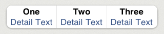

PrettyGridTableViewCell Class Reference
| Inherits from | PrettyCustomViewTableViewCell : PrettyTableViewCell : UITableViewCell |
| Declared in | PrettyGridTableViewCell.h PrettyGridTableViewCell.m |
Overview
PrettyGridTableViewCell is a PrettyCustomTableViewCell customization
that creates and manages several elements inside the same cell, displayed as a
grid.
First of all, change numberOfElements property to match your needs. Then, call setText:atIndex: for each element. You can also set detail texts with setDetailText:atIndex:.
Finally, to receive a notification when an element is selected, change the actionBlock property.
Customization
Labels
It currently presents a text label and a detailText label. All displayed
information, except the text alignment, is obtained from the properties
textLabel and detailTextLabel, inherited from UITableViewCell class. Text
Alignment should be customized through the textAlignment property.
Take into account that textLabel and detailTextLabel may change dpending on the
cell’s style. For example, if the cell’s style is UITableViewCellStyleSubtitle,
detailTextLabel.textColor would be gray, but if the style is UITableViewCellStyleValue1,
the color would be blue.
You can change the texts or detail texts of a given index through setText:atIndex:, textAtIndex:, setDetailText:AtIndex:, detailTextAtIndex:.
Selection
You can enable or disable selection highlighting. set elementSelectionStyle to
UITableViewCellSelectionStyleNone to disable highlighting, or any other
value to enable it. Use selectionGradientStartColor and selectionGradientEndColor
properties from PrettyTableViewCell to change the gradient appearance.
You can manually select a given index through selectIndex:. You can manually deselect the currently selected index through deselectAnimated:.
You can get notified when an element is selected by setting the actionBlock
property to your needs.
Performance
This cell is entirely drawn with CoreGraphics, so you will have a nice scrolling performance.
Example

[gridCell setText:@"One" atIndex:0];
[gridCell setDetailText:@"Detail Text" atIndex:0];
[gridCell setText:@"Two" atIndex:1];
[gridCell setDetailText:@"Detail Text" atIndex:1];
[gridCell setText:@"Three" atIndex:2];
[gridCell setDetailText:@"Detail Text" atIndex:2];
Tasks
Basic information
-
numberOfElementsSpecifies the number of elements in the grid.
property
Managing the labels
-
textAlignmentSpecifies the text alignment used in the grids.
property -
textsReturns an array with all the texts in the grid.
property -
detailTextsReturns an array with all the detail texts in the grid.
property -
shadowOnlyOnSelectedSpecifies if the shadow should be shown only on the selected element.
property -
– setText:atIndex:Inserts a text in the given index.
-
– textAtIndex:Returns the text in the given index.
-
– setDetailText:atIndex:Inserts a detail text in the given index.
-
– detailTextAtIndex:Returns the detail text in the given index.
Managing selection
-
– selectIndex:Selects the element in the given index, drawing (if necessary) a blue gradient in the background.
-
– deselectAnimated:Deselects the currently selected element.
-
– deselectAnimated:completion:Deselects the currently selected element and performs the given block when the animation is completed.
-
elementSelectionStyleSpecifies the selection style used in the grids.
property -
actionBlockSpeficies the action to be performed when an element is selected.
property
Other Methods
-
– prepareForTableView:indexPath:Tells the cell how it should draw the background shape.
Properties
actionBlock
Speficies the action to be performed when an element is selected.
@property (nonatomic, copy) void ( ^ ) ( NSIndexPath *indexPath , int selectedIndex ) actionBlockDiscussion
It can be nil.
Declared In
PrettyGridTableViewCell.hdetailTexts
Returns an array with all the detail texts in the grid.
@property (nonatomic, readonly) NSArray *detailTextsDeclared In
PrettyGridTableViewCell.helementSelectionStyle
Specifies the selection style used in the grids.
@property (nonatomic, assign) UITableViewCellSelectionStyle elementSelectionStyleDeclared In
PrettyGridTableViewCell.hnumberOfElements
Specifies the number of elements in the grid.
@property (nonatomic, assign) int numberOfElementsDiscussion
Each time this property is modified, all set up texts and detailTexts are erased.
Declared In
PrettyGridTableViewCell.hshadowOnlyOnSelected
Specifies if the shadow should be shown only on the selected element.
@property (nonatomic, assign) BOOL shadowOnlyOnSelectedDiscussion
By default it is set to NO.
Declared In
PrettyGridTableViewCell.htextAlignment
Specifies the text alignment used in the grids.
@property (nonatomic, assign) UITextAlignment textAlignmentDeclared In
PrettyGridTableViewCell.htexts
Returns an array with all the texts in the grid.
@property (nonatomic, readonly) NSArray *textsDeclared In
PrettyGridTableViewCell.hInstance Methods
deselectAnimated:
Deselects the currently selected element.
- (void)deselectAnimated:(BOOL)animatedDiscussion
@params – animated: Specifies if the deselection should be animated or not.
Declared In
PrettyGridTableViewCell.hdeselectAnimated:completion:
Deselects the currently selected element and performs the given block when the animation is completed.
- (void)deselectAnimated:(BOOL)animated completion:(void ( ^ ) ( void ))blockDiscussion
@params – animated: Specifies if the deselection should be animated or not. – block: the completion block. This block will be performed only if animated is YES.
Declared In
PrettyGridTableViewCell.hdetailTextAtIndex:
Returns the detail text in the given index.
- (NSString *)detailTextAtIndex:(int)indexDeclared In
PrettyGridTableViewCell.hprepareForTableView:indexPath:
Tells the cell how it should draw the background shape.
- (void)prepareForTableView:(UITableView *)tableView indexPath:(NSIndexPath *)indexPathDiscussion
This call is mandatory. Include it in your tableView dataSource’s
tableView:cellForRowAtIndexPath:.
Declared In
PrettyTableViewCell.hselectIndex:
Selects the element in the given index, drawing (if necessary) a blue gradient in the background.
- (void)selectIndex:(int)indexDeclared In
PrettyGridTableViewCell.hsetDetailText:atIndex:
Inserts a detail text in the given index.
- (void)setDetailText:(NSString *)detailText atIndex:(int)indexDeclared In
PrettyGridTableViewCell.h